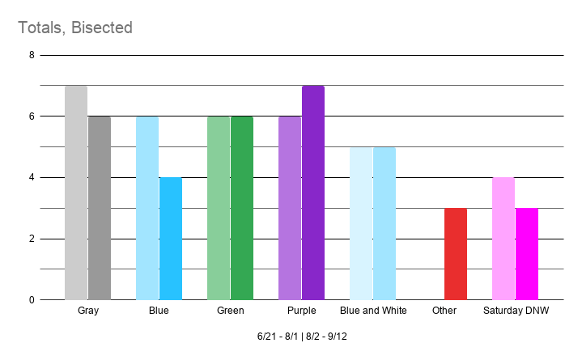

Well, well, well. Here we are again. I have returned to perform unnecessary statistical analysis on an area of Chickfila Ames. For the last twelve weeks (6/21/20 - 9/14/20) I, along with my dear friend and Chickfila Wunderkind Jace Kinzle, have been keeping close record of the color of polo Clay wears. In the past twelve weeks, he has shown us 5 different polos: Gray, Blue, Green, Purple, and a Blue and White Striped Polo. Each of these is worn (typically) once a week. Now, without further ado...

The most frequently worn polo is, in fact, a tie between the Gray and Purple Polo. This is due to a very strong showing on Mondays by the Gray Polo, and a strong showing on Tuesdays as well as later in the week by the Purple Polo. You can see in the graph below each day as well as a bar divided into colors for the frequency of the color on that day. Basically, just a convenient way of telling how often each color is worn on an individual day.

A few things to clarify - DNW refers to a day on which Clay Did Not Work. You may ask why I included these numbers in this chart - wouldn't it be simpler to leave them out? The trouble is there have been a few weeks in which Clay took his day off on Tuesday, Wednesday, or Friday, despite it usually being on Saturday. Go figure. This is the simplest way to make all the numbers align and ensure I do in fact have 72 data points (6 days per week * 12 weeks).
Here I have split the data into two halves - six weeks on each. However, unlike with Todd's Closings, the two halves are basically the same. I'm not totally certain why I expected there to be a difference in the first and second halves of the data, but this conclusively proves that for all intents and purposes there isn't. I'm quite certain that if I went to the effort to perform a two-sample t-test with the aggregated data, I would fail to reject the null hypothesis.

Here is the data divided by month. Along the bottom we have each color, and within each section we have the number of times it appeared in a given month. The columns go June-July-August-September, as they should, and you can draw what conclusions from this you will.
That graph is actually misleading, however, as June and September are only partial months, when July and August each got their full allotment of data points. So, to bring them all into alignment, here's the same data but each color converted into a percentage of all the data points for that month.

It's not perfect, and would of course be better to have four full months of data, but c'mon, what do you want from me? From this graph you can tell that Gray and Blue and White both got about the amount you would expect for June and September, as opposed to being uncharacteristically low in the prior chart.
Now, given had all this data it would be quite the shame for me to not make as many charts as I can think of. So here's a few more - draw what conclusions from them you will.


Special thanks to Hannah Humphrey. She assisted greatly one Friday in which neither Jace nor myself worked. I would also like to appreciate the fact the all the polos appear, from a distance at least, to be identical save for color. Clay, my mother thinks you should get an orange or a yellow polo. Thus, the background color.